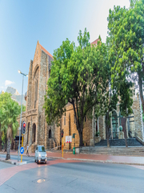
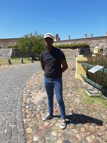

New York is one of the most beautiful city in the United States Of America .It is the most populated city in the country. It comprises of Central Park and Statue of Liberty which are the most visited tourist attractions in New York . The Place I would like to visit the most is the Time Square because it comprises of many entertainment centers . Not only is New York a tourist hub it is also a business hub that provides employment to thousands of United States Of America
The language I adore and would love to learn the most is Irish which is a language that originates from Ireland in Europe . The first time I heard Irish was when I was listening to Drill Music , from there the rest is history .
| Irish | English |
|---|---|
| Bia | Food |
| Carr | Car |
| Scoil | School |

Known as the “People’s Cathedral” for its role in the resistance against apartheid, St. George’s Cathedral is the oldest cathedral in Southern Africa and the mother church of the Anglican Diocese of Cape Town. We invite you to visit our historical and beautiful building and to be part of an active and dedicated congregation, contributing to the life of the Cathedral and the broader Cape Town community .This Cathedral exists to give glory to God and to be a sign of God’s Kingdom in this city and nation.St George’s Cathedral is both the Metropolitical Church of the Anglican Church of Southern Africa and a congregation in the Diocese of Cape Town. As such it serves many people of diverse backgrounds, both within and outside our own congregation, who look to the Cathedral for leadership, spiritual guidance and sustenance. All that we do at the Cathedral is undertaken in the spirit of trust in and gratitude for God’s overarching love and the belief that through compassion shown to others, whoever they may be, God’s love is manifested in the world.
Cape Town City Hall is a large Edwardian building in Cape Town city centre which was built in 1905. It is located on the Grand Parade to the west of the Castle and is built from honey-coloured oolitic limestone imported from Bath in England .Its lower walls and plinths use granite from the quarry on Signal Hill, whilst the honey-beige limestone, building materials and numerous fixtures and fittings were imported from Europe and Bath, in England. It remains an imposing building, helped in no small part by a restoration of its façade in 1979. In 2010 Grand Parade too was to receive a major facelift, making this block of the city a major landmark. City Hall lies between Buitengracht and Darling Streets, its forecourt, known as Grand Parade, the scene of many military and political gatherings whilst its balcony became notably famous when Nelson Mandela addressed 100 000 jubilant people just hours after his release from prison, on 11 February 1990 (he was to borrow Winnie's (his then wife, Winne Mandela) glasses to read, having left his in prison).

The Castle of Good Hope known locally as the Castle or Cape Town Castle is a bastion fort built in the 17th century in Cape Town, South Africa. Originally located on the coastline of Table Bay, following land reclamation the fort is now located inland. In 1936 the Castle was declared a historical monument (now a provincial heritage site) and following restorations in the 1980s it is considered the best preserved example of a Dutch East India Company fort .In 1682 the gated entry replaced the old entrance, which had faced the sea. A bell tower, situated over the main entrance, was built in 1684—the original bell, the oldest in South Africa, was cast in Amsterdam in 1697 and weighs just over 300 kilograms (660lb). It was used to announce the time, as well as warning citizens in case of danger, since it could be heard 10 kilometres away. It was also rung to summon residents and soldiers when important announcements needed to be made. The Castle of Good Hope is known locally as "The Castle". Its Dutch name is "Kasteel de Goede Hoop" and is a bastion fort built in the 17th century in Cape Town, South Africa.